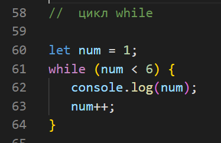
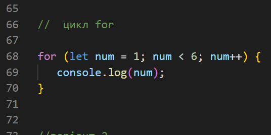

Домашка №1 JS "Оператори"
//варіант 1
помилка - виконано додавання рядків, результат був очікуваний на додавання чисел
console.log('35' + - "22"); //35-22
//варіант 3
помилка - інкримент має бути примінений до змінної
console.log('558' > 22++); //помилка error
//варіант 4
помилка - очікуваний результат 1 не повертає, повертає 0
let userCounter = 0;
let newUsers = userCounter++;
console.log(newUsers);
//варіант 5
помилка - так як, оба варіанти true, тому зупиниться на першому значенні
console.log(!false && 11 || 18 && !''); // 11
//варіант 6
оператор ?? - повертає аргумент, якщо аргумент - null або undefined , то повертає другий аргумент
console.log(name ?? "без імені"); // 0
Домашка №2 JS "Умовні оператори"
//варіант 1
помилка - при строгому дорівнює , не відбуваеться перетворення операндів різних типів в оператори чисел, зрівнюються різні оператори
if (1 === "1") {
// console.log('Істина!');
// } else {
// console.log('Брехня!');
// } // Брехня!
//варіант 2
вірно
if (5 == "5") {
console.log('Істина!');
} else {
console.log('Брехня!');
}
//варіант 3
вірно
let message = (92 > '11' && 58 < 100) ? `Істина!` : `Брехня!`; console.log(message);
//варіант 4
вірно
if (0) {
console.log('Брехня!');
} else if ('') {
console.log('Істина!');
}
Домашка №3 JS "Цикли while і for"
//варіант 1
вивести у консоль числа від 1 до 5


//варіант 2
останній рузультат буде 1
let num = 8;
while (num) {
console.log(num);
num--
}
//варіант 3
переписати на while
let num = 0;
while (num < 3) { console.log(`Число: ${num}`); num++ }
//варіант 3
зупинити роботу цикла №1 , коли size = 1
firstfor:for (let num = 0; num < 2; num++) { for (let size=0; size < 2; size++) { if (size == 1) { break firstfor; }
console.log(size); } }
Домашка №4 JS "Числа"
//задача 1
вивести вірне значення округлення числа
let sourseNum = 1.005 + Number.EPSILON;
let numOne = Math.round(sourseNum * 100) / 100;
console.log(numOne); // 1.01
//задача 2
перетворити рядок у число
let value = "135.58px"
let value = parseFloat("135.58px");
console.log(value);
console.log(typeof value);
//задача 3
побудувати вірну умову
let value = 58 + "Фрилансер";
if (value == NaN);
console.log(Number(value));
console.log(isNaN(value));
//задача 4
знайти максимальне число
console.log(Math.max(10, 58, 39, -150, 0)); //58
//задача 5
округлити число 58.858 до 58
console.log(Math.floor(58.858)); //58
Домашка №5 JS "Рядки"
//задача 1
перевірити на вірність - "Привіт! Я фрілансер"
let fls = "фрілансер";
let text = 'Привіт! Я ${fls}';
console.log(text);
помилка - не вірні лапки
//задача 2
вивести букву "н"
let text = "фрілансер";
console.log(text[5]);
//задача 3
перевірка на очікуваний результат "579"
let value = 58 + "Фрилансер";
let text = 123 + "456";
console.log(text);//123456
помилка - відбулось додавання рядків, а не чисел
//задача 4
перевести рядок у верхній регістр
let text = 'фрілансер';
console.log(text.toUpperCase());
//задача 5
вивести підрядок "лан"
console.log(text.slice(3, 6));
//задача 6
true або false
let text = 'фрілансер';
// console.log(text.includes('лан', 4)); // false // true - ('лан', 3)